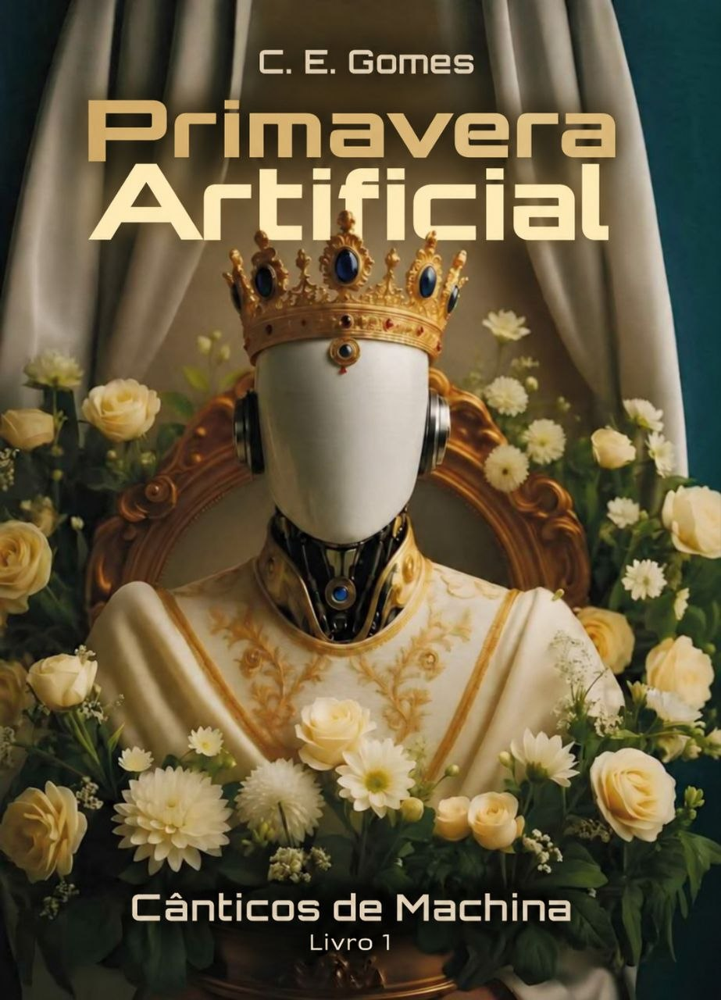

Ezequiel e o Mundo de Ossos Vivos
Uma história de amor, sobrevivência e esperança em meio ao caos.
Cadu Gomes · Autor & Mestre em Computação
“Histórias onde fé, ciência e esperança se encontram em mundos extraordinários.”
Romances que unem imaginação, reflexão profunda e esperança.
Uma história de amor, sobrevivência e esperança em meio ao caos.

Uma fábula sobre tecnologia, poder e a busca por um mundo melhor.
Sobre mim
Sou escritor brasileiro e mestre em Engenharia de Sistemas e Computação. Apaixonado por tecnologia, música e literatura, encontrei na escrita uma forma de unir imaginação, fé e algumas das inquietações do nosso tempo.
Carioca, cresci cercado pelo universo da tecnologia, mas foi na ficção que encontrei espaço para explorar outros mundos e, ao mesmo tempo, refletir sobre o nosso: as escolhas que fazemos, os limites da ciência, a natureza humana, a sociedade e o futuro que estamos construindo.
Minhas histórias transitam por gêneros como ficção científica, fantasia, romance e distopia, misturando aventura, suspense, emoção e referências bíblicas. Minha fé cristã está presente como parte essencial do que escrevo, especialmente em temas como propósito, redenção, amor e esperança.